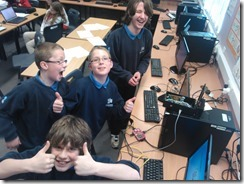
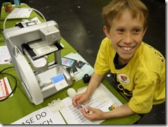

KES Recursion Computer Science Fair, Saturday 15 February 2014
- Details
- Published on Tuesday, 04 February 2014 21:39
- Written by Edward Powell
- Hits: 1192

I’ll be there to represent GCC & Kenilworth School and I’ll hopefully have lots of interesting things to show, including my usual Raspberry Pi goodness, a CNC-machine, a 3D printer and lots of homebrew games! Also at the fair will be robot wars, electronics projects, hands-on activities and lots more.
The fair will be open between 11.00 – 16:00, and all are welcome.
More details can be found on the website: http://www.recursioncomputerfair.co.uk/
Hopefully see as many of you there as possible!
Happy New Year!
- Details
- Published on Wednesday, 08 January 2014 09:12
- Written by Edward Powell
- Hits: 959
Welcome to 2014. I hope everyone had a great Christmas break and spent their time coding on exciting new gadgets? Santa brought me an Oculus Rift Virtual Reality Headset, which is extremely cool. The dev kit has kept me fully occupied over the holidays and I’ll perhaps demo it at one of our meetings soon.
Our first session for 2014 will be on:
Wednesday 14 January at the usual time of 6:30pm.
We have lots of interesting projects for the new term, so we're looking forward to seeing you all then.
GCC Part II–The Director’s Cut
- Details
- Published on Monday, 16 September 2013 20:02
- Written by Edward Powell
- Hits: 1245
So here we are at the start of the new school year, but never fear – with the new term comes the all new Games Creators Club!
{kind=link}
We’ve had to move our club night and we will now be starting 30 mins later. However, we are also going to *double* the duration of each session. For all-comers in the first hour we’ll be working on Minecraft mods using Python then, in the second hour, we be able to focus entirely on more advanced coding topics for Year 9’s and up using Unity 3D. Please watch out for posters in the school and check with your tutors for a full update this week.
GCC goes with a Big Bang!
- Details
- Published on Monday, 16 September 2013 19:47
- Written by Edward Powell
- Hits: 1364
{kind=link}
Well done to everyone who helped out at the Big Bang Show. I’ve had very positive feedback from the organisers and I think that we can be really pleased with the interest we generated both from the students and the teachers who attended.
{kind=link}
We had several Raspberry Pi’s on the go showing python scripting for Minecraft. We were also running a slick professional game compiled from source C++ code on the RPi’s. We can’t really claim any GCC credit here, but playing Quake 3 at full frame-rate on a pocket PC was cool and does show off what our little club computers are capable of when suitably motivated!
I think we also need a particular mention for Tim for his RPi phone controlled disco setup – a really ingenious effort and all his own work. A genuinely impressive combination of electronics, internet comms and PHP – well done Tim!
 Tim’s
fully functioning project put my (notably unfunctional) homebrew CNC
machine to shame, but I have been working on it since the show, so watch
this space…
Tim’s
fully functioning project put my (notably unfunctional) homebrew CNC
machine to shame, but I have been working on it since the show, so watch
this space…
Luckily we also had a Cubify 3D Printer beavering away to build a plastic Raspberry Pi case from a 3D computer model. A power cut at a rather critical moment meant we had to start the build process again from the beginning but people didn’t seem to mind. Watching the machine creating a real object, apparently from thin air, was mesmerising.
GCC at the Big Bang West Midlands - 25th June 2013
- Details
- Published on Thursday, 09 May 2013 08:38
- Written by Edward Powell
- Hits: 1637
The Games Creators Club will have a stand at this year’s Big Bang science and engineering fair at the Ricoh Arena in Coventry on 25 June. We will be part of the Imagineering area and we will be showing off our latest game designs, Raspberry Pi contraptions and discussing all things computery with whoever is interested! All of year 8 from Kenilworth school will be in attendance, plus hundreds of other students from across the region. Should be great, but we’d better get our games finished in time...!
Find out more details from the website: http://www.thebigbangfair.co.uk and http://www.thebigbangfair.co.uk/westmidlands/nearme.cfm